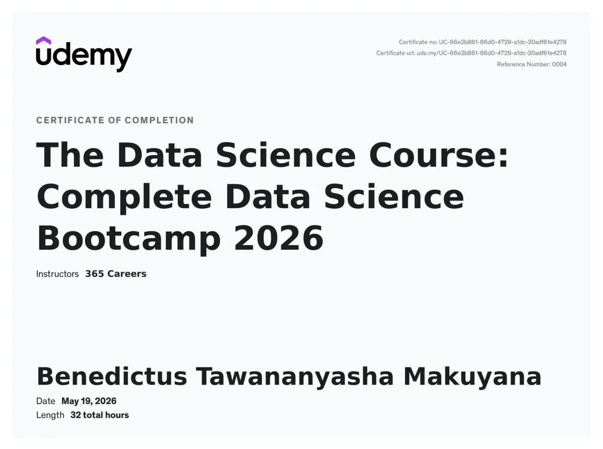

Product engineering
Turning an operational problem into flows, interfaces, APIs, data and a deployable product.

AI Automation & Product Engineer · BTech Computer Science Student
I build useful systems—not technology theatre. My work spans hospitality operations, student infrastructure, business automation and full-stack product delivery.
Dr BennyT is my online identity and a family nickname from birth, not an academic title.
I started coding during the Covid-19 lockdown after watching Game Shakers and thinking, “I could build something like that.” A mentor introduced me to C and C++; the rest became years of self-directed learning across the web, backend systems, product design and automation.
That curiosity now has receipts. At Afriform Software, I worked as an Associate Developer from November 2025 to July 2026, contributing to TimelessHR, AutoSales and the company website. I helped make platforms more dynamic through admin-controlled content, current programmes, blogs and SEO-focused publishing.
Today I am building aiDo: practical AI systems for African business. GuestAI handles hospitality workflows; CalenderZW turns university timetables into usable calendars; aiDo DMs is being developed to move customer conversations into orders, bookings, quotes, follow-ups and human handoffs.
Alongside product work, I am studying BTech Computer Science at Harare Institute of Technology and building Scholarz Nation into a trusted student opportunity and progress network. The goal is consistent: software that people can actually use, trust and keep using.
Turning an operational problem into flows, interfaces, APIs, data and a deployable product.
Human-in-the-loop workflows, n8n automation, lead handling, handoffs and practical business AI.
JavaScript, TypeScript, React, Astro, Node.js, PHP/Laravel, REST APIs and responsive interfaces.
Python, SQL, Supabase, structured analysis and machine-learning foundations strengthened through formal study.
GitHub workflows, Docker, VPS deployment, Cloudflare, production checks and maintainable documentation.
Clear scope, mobile-first African context, honest capability boundaries and outcome-focused iteration.

A 32-hour completion programme covering the foundations and applied workflow of modern data science.
Building the aiDo ecosystem, including GuestAI, CalenderZW and aiDo DMs, around real operational work and human oversight.
Formal study across computer science, software systems and the engineering foundations behind dependable products.
Contributed to TimelessHR, AutoSales and Afriform’s corporate platform across backend, product, dynamic content and SEO delivery.
Completed 32 hours of structured data science learning and earned a verifiable certificate.
Completed with A* in Computer Science, A in Pure Mathematics and B in Physics.